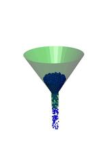
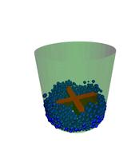

Syntax:
fix ID group-ID wall/gran/region fstyle Kn Kt gamma_n gamma_t xmu dampflag wallstyle regionID
possible choices: hooke, hooke/history, hertz/history
Examples:
fix wall all wall/gran/region hooke/history 1000.0 200.0 200.0 100.0 0.5 1 region myCone
Description:
Treat the surface of the geometric region defined by the region-ID as a bounding frictional wall which interacts with nearby finite-size granular particles when they are close enough to touch the wall. See the fix wall/region and fix wall/gran commands for related kinds of walls for non-granular particles and simpler wall geometries, respectively.
Here are snapshots of example models using this command. Corresponding input scripts can be found in examples/granregion. Click on the images to see a bigger picture. Movies of these simulations are here on the Movies page of the LAMMPS web site.
 The distance between a particle and the region boundary is the distance to the nearest point on the region surface. The force the wall exerts on the particle is along the direction between that point and the particle center, which is the direction normal to the surface at that point. Note that if the region surface is comprised of multiple "faces", then each face can exert a force on the particle if it is close enough. E.g. for region_style block, a particle in the interior, near a corner of the block, could feel wall forces from 1, 2, or 3 faces of the block.
Regions are defined using the region command. Note that the region volume can be interior or exterior to the bounding surface, which will determine in which direction the surface interacts with particles, i.e. the direction of the surface normal. The exception to this is if one or more open options are specified for the region command, in which case particles interact with both the interior and exterior surfaces of regions.
Regions can either be primitive shapes (block, sphere, cylinder, etc) or combinations of primitive shapes specified via the union or intersect region styles. These latter styles can be used to construct particle containers with complex shapes. Regions can also move dynamically via the region command keywords (move) and rotate, or change their shape by use of variables as inputs to the region command. If such a region is used with this fix, then the region surface will move in time in the corresponding manner.
NOTE: As discussed on the region command doc page, regions in LAMMPS do not get wrapped across periodic boundaries. It is up to you to ensure that the region location with respect to periodic or non-periodic boundaries is specified appropriately via the region and boundary commands when using a region as a wall that bounds particle motion.
NOTE: For primitive regions with sharp corners and/or edges (e.g. a block or cylinder), wall/particle forces are computed accurately for both interior and exterior regions. For union and intersect regions, additional sharp corners and edges may be present due to the intersection of the surfaces of 2 or more primitive volumes. These corners and edges can be of two types: concave or convex. Concave points/edges are like the corners of a cube as seen by particles in the interior of a cube. Wall/particle forces around these features are computed correctly. Convex points/edges are like the corners of a cube as seen by particles exterior to the cube, i.e. the points jut into the volume where particles are present. LAMMPS does NOT compute the location of these convex points directly, and hence wall/particle forces in the cutoff volume around these points suffer from inaccuracies. The basic problem is that the outward normal of the surface is not continuous at these points. This can cause particles to feel no force (they don't "see" the wall) when in one location, then move a distance epsilon, and suddenly feel a large force because they now "see" the wall. In a worst-case scenario, this can blow particles out of the simulation box. Thus, as a general rule you should not use the fix wall/gran/region command with union or interesect regions that have convex points or edges resulting from the union/intersection (convex points/edges in the union/intersection due to a single sub-region are still OK).
NOTE: Similarly, you should not define union or intersert regions for use with this command that share an overlapping common face that is part of the overall outer boundary (interior boundary is OK), even if the face is smooth. E.g. two regions of style block in a union region, where the two blocks overlap on one or more of their faces. This is because LAMMPS discards points that are part of multiple sub-regions when calculating wall/particle interactions, to avoid double-counting the interaction. Having two coincident faces could cause the face to become invisible to the particles. The solution is to make the two faces differ by epsilon in their position.
The nature of the wall/particle interactions are determined by the fstyle setting. It can be any of the styles defined by the pair_style granular commands. Currently this is hooke, hooke/history, or hertz/history. The equation for the force between the wall and particles touching it is the same as the corresponding equation on the pair_style granular doc page, but the effective radius is calculated using the radius of the particle and the radius of curvature of the wall at the contact point.
Specifically, delta = radius - r = overlap of particle with wall, m_eff = mass of particle, and RiRj/Ri+Rj is the effective radius, with Rj replaced by the radius of curvature of the wall at the contact point. The radius of curvature can be negative for a concave wall section, e.g. the interior of cylinder. For a flat wall, delta = radius - r = overlap of particle with wall, m_eff = mass of particle, and the effective radius of contact is just the radius of the particle.
The parameters Kn, Kt, gamma_n, gamma_t, xmu and dampflag have the same meaning and units as those specified with the pair_style granular commands. This means a NULL can be used for either Kt or gamma_t as described on that page. If a NULL is used for Kt, then a default value is used where Kt = 2/7 Kn. If a NULL is used for gamma_t, then a default value is used where gamma_t = 1/2 gamma_n.
Note that you can choose a different force styles and/or different values for the 6 wall/particle coefficients than for particle/particle interactions. E.g. if you wish to model the wall as a different material.
Restart, fix_modify, output, run start/stop, minimize info:
Similar to fix wall/gran command, this fix writes the shear friction state of atoms interacting with the wall to binary restart files, so that a simulation can continue correctly if granular potentials with shear "history" effects are being used. This fix also includes info about a moving region in the restart file. See the read_restart command for info on how to re-specify a fix in an input script that reads a restart file, so that the operation of the fix continues in an uninterrupted fashion.
NOTE: Information about region definitions is NOT included in restart files, as discussed on the read_restart doc page. So you must re-define your region and if it is a moving region, define its motion attributes in a way that is consistent with the simulation that wrote the restart file. In particular, if you want to change the region motion attributes (e.g. its velocity), then you should ensure the position/orientation of the region at the initial restart timestep is the same as it was on the timestep the restart file was written. If this is not possible, you may need to ignore info in the restart file by defining a new fix wall/gran/region command in your restart script, e.g. with a different fix ID. Or if you want to keep the shear history info but discard the region motion information, you can use the same fix ID for fix wall/gran/region, but assign it a region with a different region ID.
None of the fix_modify options are relevant to this fix. No global or per-atom quantities are stored by this fix for access by various output commands. No parameter of this fix can be used with the start/stop keywords of the run command. This fix is not invoked during energy minimization.
Restrictions:
This fix is part of the GRANULAR package. It is only enabled if LAMMPS was built with that package. See the Making LAMMPS section for more info.
Related commands:
fix_move, fix wall/gran, fix wall/region, pair_style granular, region
Default: none